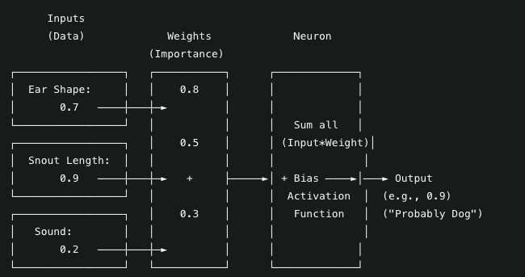
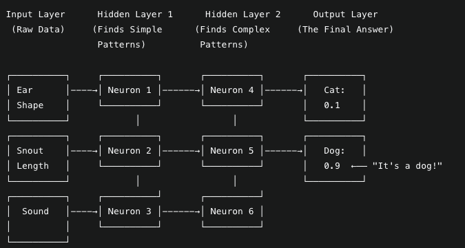
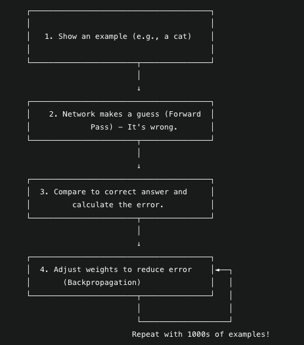

A Simple Explanation of Artificial Intelligence's Core Technology
Neural Networks: Pattern-Mimicking Machine
Inspired by the principle that "if you can't explain it simply, you don't understand it well enough," this paper explains neural networks through the analogy of a child learning to tell cats from dogs.
An illustrated explainer that breaks neural networks into three core components: the artificial neuron, the layered network structure, and the training loop, each supported by a diagram.
Give non-specialists a foundational, intuitive understanding of how neural networks learn patterns from examples, without heavy mathematics.
Generated initial content with DeepSeek AI, structured it into a progression from single neuron to full training loop, created supporting diagrams, and added professional insights on applying these concepts.
DeepSeek AI for content generation, diagram tools for the three figures, HTML/CSS for presentation, and GitHub Pages for publishing.
Makes the core technology behind modern AI approachable for stakeholders, students, and engineers moving into AI from other disciplines.
Pairs an everyday analogy with technical detail (weights, bias, activation, backpropagation, learning rate), and connects it to mechanical and software engineering feedback systems.
Foundational for understanding CNNs, Transformers, and every deep learning architecture covered elsewhere in this portfolio.
Content generated with DeepSeek AI and reviewed by the author; standard neural network concepts including the perceptron, multi-layer networks, and backpropagation with gradient descent.
This paper consists of content written by DeepSeek, an AI agent. It provides a foundational understanding of neural networks in machine learning by using the analogy of a child learning to recognize animals. We break down the complex concept into its core components: the artificial neuron, the network structure, and the learning process, supported by visual diagrams and intuitive explanations.
Imagine you are teaching a young child to tell the difference between a cat and a dog. You don't give them a textbook with definitions. Instead, you show them many examples, pointing and saying, "This is a cat," or "This is a dog."
The child's brain starts to notice patterns:
After enough examples, the child can see a new animal and make a good guess. A neural network is a mathematical version of this process. It's a computer program that learns to recognize patterns from examples.
The smallest part of a neural network is an artificial neuron. Think of it as a tiny decision-maker that takes in several pieces of information (inputs), weighs their importance, and makes a simple decision.

The data points (e.g., ear shape, snout length). These are numerical values representing features.
Each input has a "weight" representing its importance. A high weight for "snout length" means this is a crucial clue for identification.
A special number that allows the neuron to adjust its output, making it more flexible in decision-making.
A mathematical rule that decides whether the neuron should "fire." It transforms the calculated sum into a useful output (typically between 0 and 1).
A single neuron has limited capability. The true power emerges when we connect many neurons together in layers, forming a network that can handle complex pattern recognition.

Receives the raw data (e.g., animal measurements converted to numbers).
The "thinking" layers where pattern recognition occurs:
Produces the final prediction with probability scores for each possible class.
The network learns the optimal weights through a process called training, which involves repeated cycles of prediction and adjustment.

Technical Insight: This process of forward pass, error calculation, and backpropagation is repeated across thousands of examples over multiple epochs. The network gradually converges toward optimal weights that minimize prediction errors. The learning rate determines how much weights are adjusted in each iteration: too high and the network may overshoot optimal values, too low and learning becomes impractically slow.
In essence, a neural network is not a brain, but a mathematical model inspired by one. It is a system that:
The true power of neural networks lies in their ability to learn incredibly complex and subtle patterns directly from data, far beyond what a human programmer could ever explicitly code into a machine. This capability forms the foundation of modern artificial intelligence and enables applications from image recognition to natural language processing.
As an AI engineer, understanding these fundamental concepts is crucial for designing effective neural architectures. The principles explained here, from individual neuron computation to network-wide learning, form the basis for more advanced architectures like CNNs for computer vision and Transformers for natural language processing.
My background in both mechanical engineering and software development provides a unique perspective on these systems. Just as mechanical systems have well-defined input-output relationships and feedback mechanisms, neural networks operate on similar principles of systematic transformation and iterative improvement based on performance feedback. This interdisciplinary understanding allows me to design AI systems that are not only technically sound but also practically implementable and maintainable.